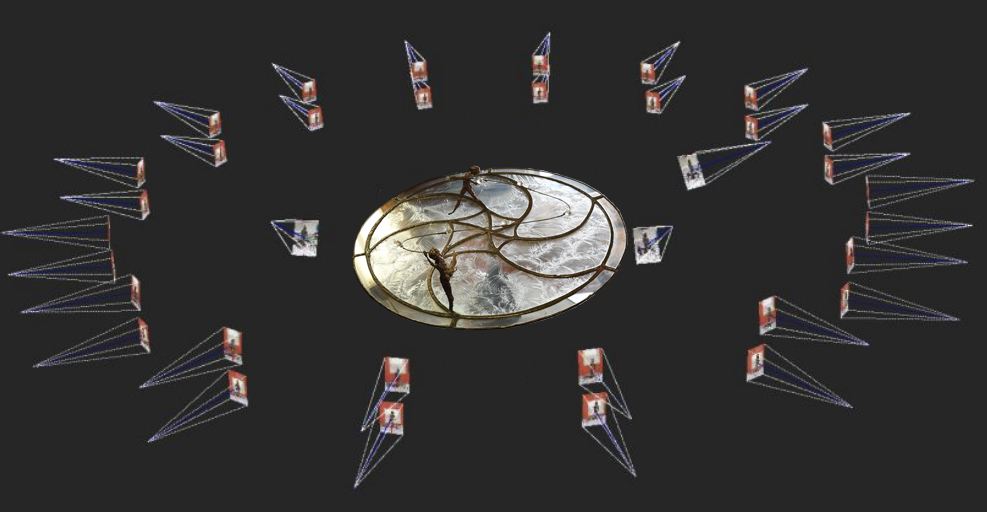

Home 3D Models
3D Models
The Forgotten Glassworks project involves the creation of 3D models, as well.
The need of creating 3D models of Saul's artworks is due to the following reasons:
- Fragility of the artworks: they are made of glass, which can be ruined by time and accidents.
- Unreachability of the museum: as said earlier, the museum is located in an American island and it is hard to get access to it.
- Need to find a good virtual space to display the artworks and involve the users.
- Presence of unique elements and characteristics that can be studied and observed in a better way, if the 3D reconstruction is available.
How to perform the 3D reconstruction:
- An SLR digital camera is required to get a good image acquisition.
- The camera must be calibrated and the images oriented.
- Lights can be a problem at Saul's house. Therefore, it is necessary to implement cold lamps (possibly mounted on tripods) and circular polarized filters and apply them to camera lens and lamps.
- Each artifact will be placed on a turning table and rotated every time of at least 1/16 of a round angle. As a matter of facts, the advantage of rotating the object (when allowed) with respect to rotating the camera around it is that the space needed for the photographic acquisition can be significantly reduced.
- Several turns at different heights to cover the whole object and also strengthen the camera network will be required; for each artwork, it will be necessary to have front view, side view and back view.

What to take into consideration:
- The risk of hitting and damaging other heritage assets when moving around with bulky equipment can be really high and must not be underestimated.
- Turning tables have disadvantages, as well: within the imaged scene there are relative movements between the artefacts and the surrounding environment. Therefore, if automatic photogrammetric orientation is used, images have to be properly masked for removing parts of the images not belonging to the artefacts. Setting up a homogeneous background (e.g. a green screen) can help solve the problem.
What to do after:
- Perform a manual editing of the images, in order to mask the background and leave only the artifact visible on the pictures.
- Scale the images by using an appropriate reference scale bar.
- Run an automatic dense image matching process.
- Triangulate the derived dense point cloud to obtain a mesh model.
- Edit the mesh model to correct for topological errors.
- Texture the mesh model with high resolution external texture generated from the original images.